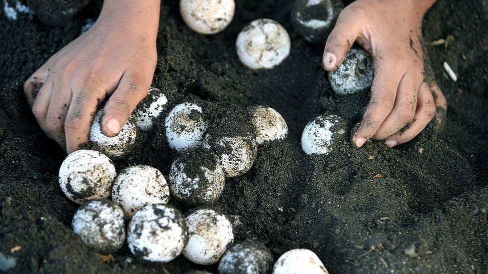
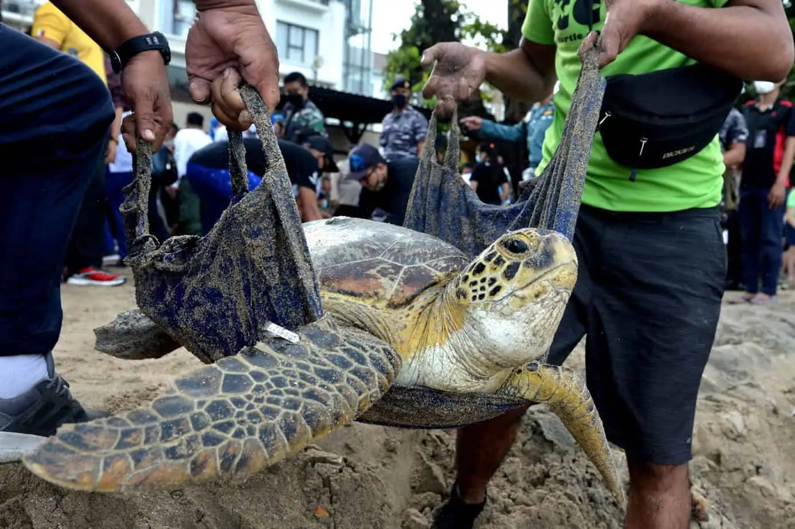

The oldest marine turtle fossils were discovered around 150 million years ago.They used to travel
in too mnay different groups to count throughout the oceans of the world.
However, in only the past 100 years, turtle numbers have been in decline because to the desire for
their meat, eggs, skin and exquisite shells. due to ocean pollution, loss of feeding and nesting
areas, and other issues, the last remaining populations of sea turtles are currently suffering tremendously.
Breeding populations ijn existence have already lost a significant portion of their numbers, and an entire
species are vanishing. Sea turtles could soon become a rare species only found in aquariums and natural
history museums if nothing is done about it right now.
The loggerhead and olive ridley sea turtles are listed as threatened in the United States under the
endangered species act, while the green leatherback, and hawkbill sea turtles are listed as endangered.
According to the international Union for Conservation of Natural and Natural Resources (IUCN),hawksbill
turtles are critically endangered and face an extremely high risk of going extinct in the wild in the
near future, while olive ridley sea turtles are listed as endangered and face a very high risk of going
extinct in the wild in the near future.
Types of threats

Egg collection
significant issue is the egg gathering of marine turtles. Sea turtle embryos are prized as
an uncommon delicacy in Sri Lanka. Many of the eggs deposited along the Southern
Coast of the nation are gathered and distributed for human consumption.
To safeguard the hatchlings, sea turtle hatcheries have begun purchasing the embryos
from vendors. However, the neighborhood's turtle species will go extinct if egg collection
keeps up at the present pace.

Illegal hunting
Adult tortoises are still subject to illegal trapping. The flesh or attractive shells of the
reptiles are reasons for their killing. Hunters frequently kill Hawksbills in particular
because of their stunning projectiles.
Hawksbills consume a lot of venomous marine creatures, which can make their flesh
toxic, so consuming this turtle's meat could result in the capturer losing their life. The
flesh has caused several deaths in Sri Lanka.

Marine debris
Numerous national and foreign groups labor to conserve sea turtles and safeguard
their populations from these anthropogenic dangers. Sadly, Sri Lanka frequently
lacks the funding necessary to maintain ongoing marine turtle protection programs at full strength.
International organizations like the World Wildlife Fund and the UN are pushing
fishers to transition to turtle-friendly circular hooks in an effort to decrease turtle
injuries from nets and hooks. Poaching can also be avoided by assisting residents
in finding better employment possibilities, such as ecotourism